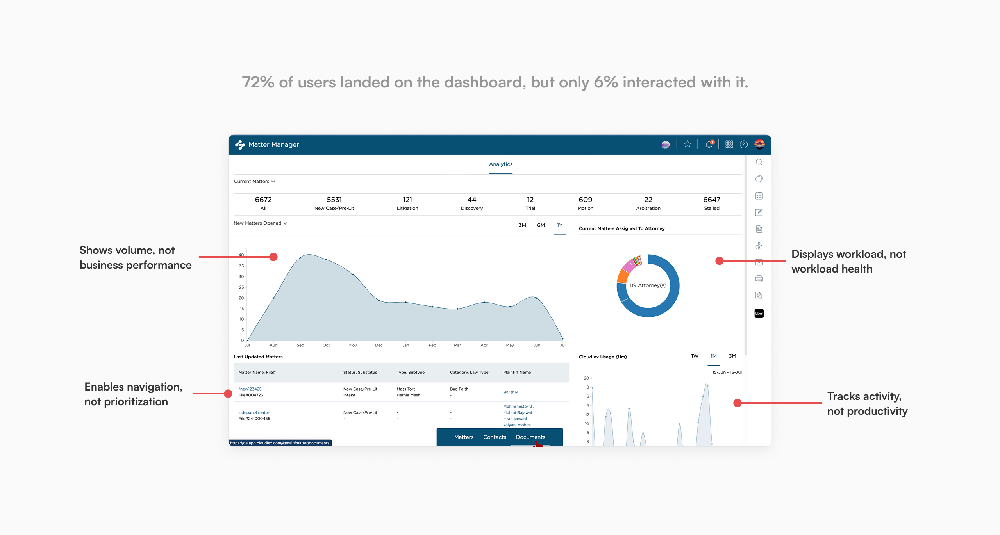
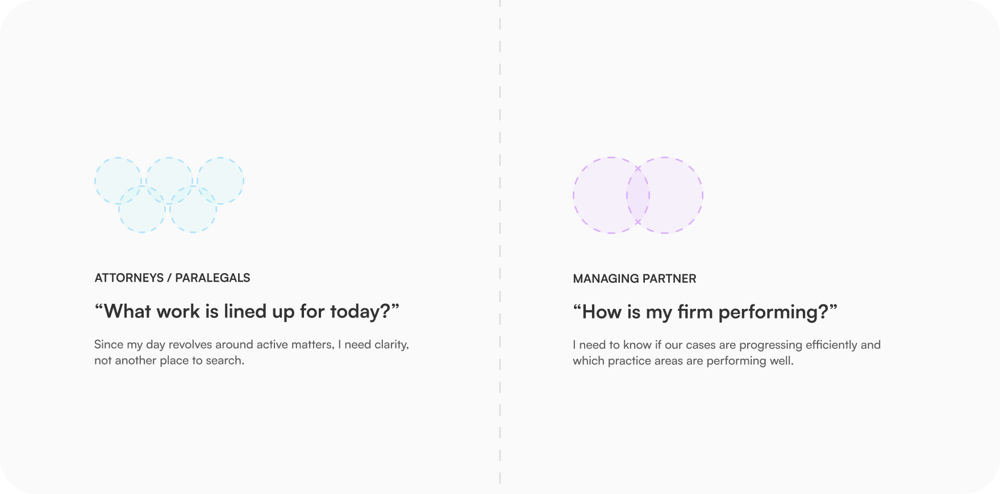
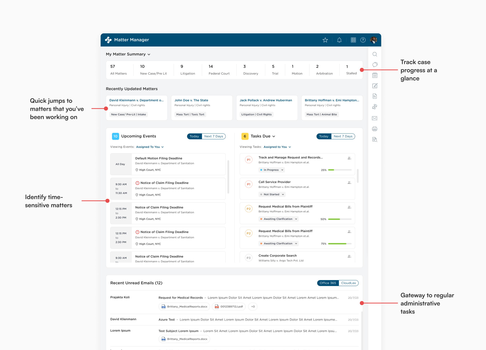
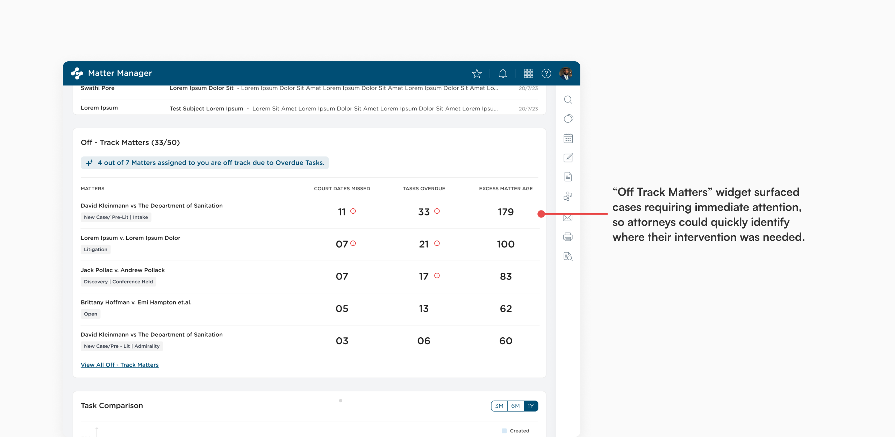
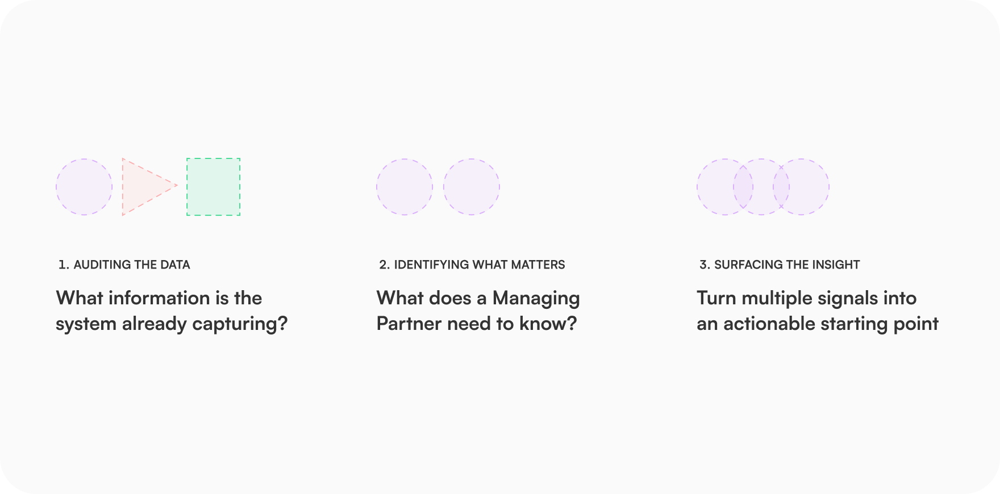
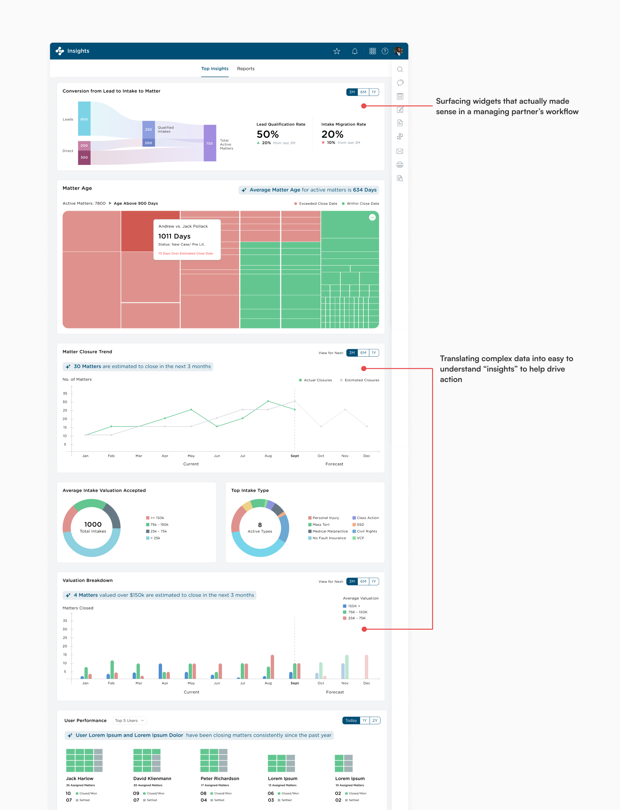

A personal injury law firm is a complex ecosystem where multiple users work together to deliver successful outcomes for clients. Yet the case management platform primarily functioned as a repository of information- not a tool that helped people understand what needed attention, make decisions, or take action.
Uncovering the problem
A prominent product surface that failed to demonstrate the value it delivered. Low engagement, combined with recurring customer feedback that the dashboard wasn't useful, raised important questions:
- Was the information being surfaced actually relevant?
- Were we solving the right user problems?
- What should users be able to accomplish from this surface?
- If the dashboard disappeared, would users actually miss it?

Research
Through stakeholder interviews, alongside a review of existing workflows and operational processes, we uncovered two distinct user groups with fundamentally different needs - revealing complementary opportunities for the platform to better support how they work.

Design principles
Prioritise information
Surface the most relevant information based on the user's role
Support action
Allow users to immediately take the next appropriate step.
Reduce cognitive load
Organize information clearly and minimize context-switching
Supporting operational teams
The Matter Workbench became the central workspace for attorneys and paralegals managing active matters. It consolidated case activity, tasks, deadlines, and priorities into a single operational view, enabling users to quickly understand what required attention and efficiently manage high-volume caseloads.


Supporting firm leadership
The Insights Dashboard gave managing partners a comprehensive view of firm performance. Instead of relying on manually generated reports or disconnected spreadsheets, leaders could monitor operational and business metrics in real time to understand performance, identify trends, and make informed strategic decisions.


Outcome
Together, the Matter Workbench and Insights Dashboard transformed the platform into a role-aware operational command center. Despite serving different user groups, both experiences were connected by a common goal: reducing manual effort, improving visibility, and enabling better decisions across the firm.
Increased adoption by
85%
Reduction in reporting time
15%
Reach out for full-time jobs, freelance projects, design advice or just to say hi!